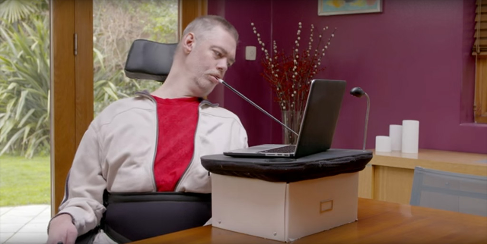
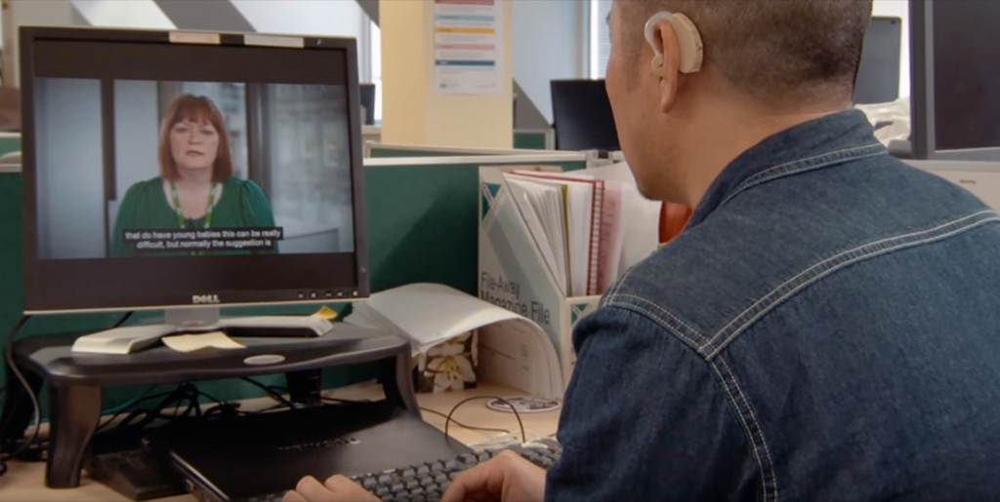

Introduction to Web Accessibilty
Introduction
Most of us can hardly conceive of life without the internet. Some have argued that no other single invention has been more revolutionary since Gutenberg's printing press in the 1400s. The world can be “at your fingertips” at the click of a mouse—if you can use a mouse... and see the screen... and hear the audio.
The Web Offers Unprecedented Opportunities
The internet is one of the best things that has ever happened to people with disabilities. Recall the pre-internet days: How could blind people read printed newspapers? They could travel to a library for an audio tape or bulky Braille version, or they could ask someone to read to them at home. This made blind people dependent upon others, but it was all we could do.
Today we can do better.Screen reader software is designed to read online content aloud. Blind people no longer need to rely on others to read to them. They simply open a browser and interact with content independently, on their schedule, and as soon as the content is published.
People with motor disabilities interact with online content using assistive devices that map their abilities to their hardware. Some are simple, like a mouth wand to interact with the keyboard. Others are more sophisticated, such as alternative keyboards, or eye-tracking software that allows people to use a computer with nothing more than eye movements.
People who are deaf or hearing-impaired rely on captions and transcripts of multimedia. Many people with cognitive disabilities also benefit greatly from the structure and flexibility of web content.
Falling Short of the Web's Potential
The web's great potential for people with disabilities remains largely unrealized. For example, some sites can only be navigated using a mouse, and some multimedia is not captioned. What if you can’t use a mouse? What if you can't hear the audio?
As soon as we begin asking these types of questions, we begin to see how the internet can create barriers to people with disabilities—harming the internet's potential, frustrating users (customers), and leaving them dependent on others.
However, once we recognize the barriers, we can begin to remove them.
People with Disabilities on the Web
One in four adults in the United States has a disability.Although not all disabilities impact internet use, businesses would be unwise to purposely exclude 25, 15, or even five percent of their potential customers. In education and government, in many cases it is illegal discrimination.
Disability Categories

Each category requires deliberate strategy in content design. Often, these strategies promote overall usability, beyond people with disabilities. Everyone benefits from helpful illustrations, logically-organized content and intuitive navigation. Similarly, while users with disabilities need captions and transcripts, they can be helpful to anyone who uses multimedia in silent or noisy environments.
Implementing Web Accessibility
Before anyone can make their website accessible, they must understand accessibility, be committed to ensuring accessibility, learn how to implement accessibility, and understand their legal obligations.
Commitment and accountability
Awareness. The foundation of any commitment to accessibility is awareness of the barriers. Few developers oppose the broad concept of inclusive design; many simply do not perceive the barriers faced by users with disabilities.
Leadership. If organizational leadership demonstrates a commitment to web accessibility, chances are high that the organization's web content will be accessible. Developers will make content accessible if they feel that the effort is expected, recognized and rewarded.
Policies and Procedures. When the idea of accessibility is backed by policies and procedures, it becomes part of the daily routine. The best approach for a large organization is to implement an internal accessibility policy.
Training and technical support
Website stakeholders often ask what must be "added" to a website to make it accessible. In practice, accessible code structures are typically more lightweight and efficient.
Although accessible development may initially add time and expense to a project, the benefits of providing access to a larger population almost always outweigh the time required by a knowledgeable developer to implement that accessibility.
A developer can learn the basics of web accessibility in just a few days, but, as with any technical skill, it often takes months to internalize the mindset as well as the techniques. Free resources like WebAIM articles, resources, email discussion list,monthly newsletter, and blog provide relevant resources for administrators, developers, and designers. Many professionals can help your organization ensure high accessibility. WebAIM offers onsite training, technical assistance, website evaluation, and other services.
Laws and standards
If you live in the United States, applicable laws include The Americans with Disabilities Act (ADA) and the Rehabilitation Act of 1973 (Sections 504 and 508). Many international laws also address accessibility.
The Web Content Accessibility Guidelines (WCAG) provide an international set of guidelines. They are developed by the Worldwide Web Consortium (W3C), the governing body of the web. These guidelines, the basis of most web accessibility laws in the world, are based on four principles:
- Perceivable: Available to the senses (vision and hearing primarily) either through the browser or through assistive technologies (e.g. screen readers, screen enlargers, etc.)
- Operable: Users can interact with all controls and interactive elements using either the mouse, keyboard, or an assistive device.
- Understandable: Content is clear and limits confusion and ambiguity.
- Robust: A wide range of technologies (including old and new user agents and assistive technologies) can access the content.
These first letters of these four principles spell the word POUR. This may help you remember them.
Principles of Accessible Design
Below you will find a list of some key principles of accessible design. Most can be implemented without compromising the overall look and feel of your website.
- Provide equivalent alternative text
- Alternative text provides a textual alternative to non-text content in web pages. It is especially helpful for people who are blind and rely on a screen reader to have the content of the website read to them.
- Create logical document structure
- Headings, lists, and other structural elements provide meaning and structure to web pages. They can also facilitate keyboard navigation within the page.
- Provide headers for data tables
- Data tables need row and column header cells (
<th scope="row">and<th scope="col">) to programmatically associate them with their corresponding data cells (<td>), making it easier for screen reader users to navigate and understand the table. - Ensure users can complete and submit all forms
- Every form element (text field, checkbox, dropdown list, etc.) needs a programmatically-associated label. Users must be able to submit the form and recover from errors.
- Write links that make sense out of context
- Every link should make sense when read by itself. Screen reader users may choose to read only the links on a web page. Certain phrases like "click here" and "more" must be avoided.
- Caption and/or provide transcripts for media
- Videos and live audio must have captions and a transcript. With archived audio, a transcription may be enough.
- Ensure accessibility of PDF, Word, PowerPoint, and other non-HTML content.
- PDF documents and other non-HTML content must be as accessible as possible. If you cannot make it accessible, consider using HTML instead or, at the very least, provide an accessible alternative. PDF documents should also include a series of tags to make it more accessible. A tagged PDF file looks the same, but it is almost always more accessible to a person using a screen reader.
- Allow users to skip repetitive elements on the page
- Each page should provide a method to skip navigation or other elements that repeat on every page. This is usually accomplished by providing a "Skip to Main Content," or "Skip Navigation" link at the top of the page.
- Do not rely on color alone to convey meaning
- Color can enhance comprehension but cannot alone convey meaning. That information may not be available to a person who is color blind and will be unavailable to screen reader users.
- Make sure content is clearly written and easy to read
- Write clearly,use clear fonts, and use headings and lists logically.
- Make JavaScript accessible
- Ensure JavaScript event handlers are device independent (e.g., they do not require the use of a mouse).
- Design to standards
- Valid HTML and CSS promote accessibility by making code more flexible and robust.
This is just an introduction. To learn more, explore our articles and resources.
Conclusion
The web offers independence and freedom unavailable through any other medium. Websites that ignore accessibility unintentionally exclude a segment of the population that stands to gain the most from the internet. As you become aware of and implement accessibility, you can do your part to ensure the web can be accessed by a broader population.